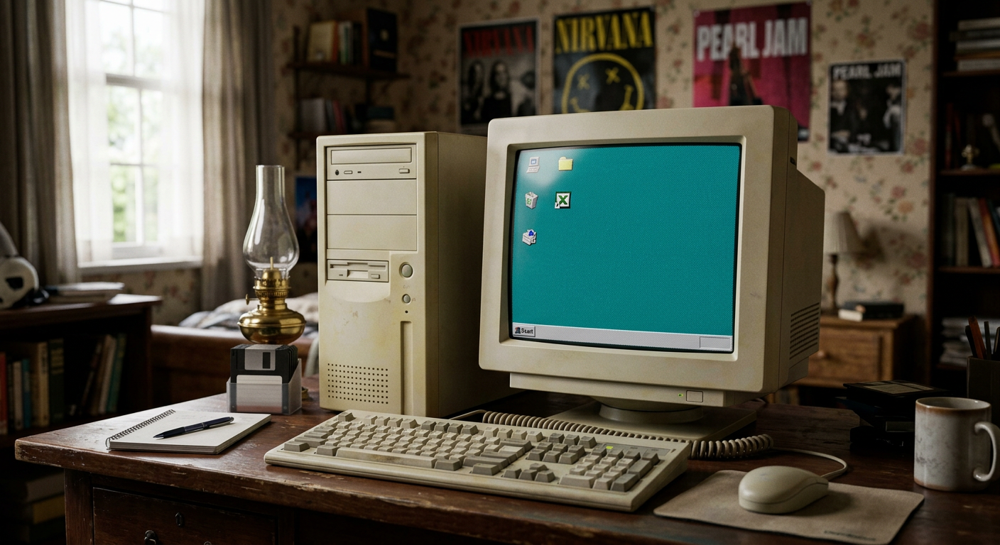
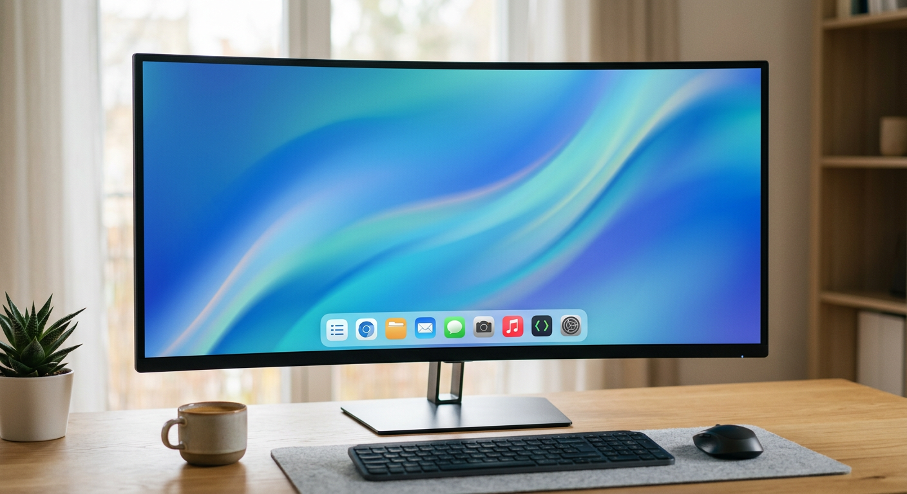

Windows-u Microsoft şirkəti yaradıb. Microsoft-u 1975-ci ildə Bill Gates və Paul Allen qurublar.
İlk versiya Windows 1.0 idi və 1985-ci ildə çıxdı.Ondan sonra çoxlu yeni versiyalar gəldi.

Windows 95 ilə ilk dəfə Start menyusu gəldi. Windows XP isə 2001-ci ildə çıxdı və çox məşhur oldu.

Ən son versiya Windows 11-dir. 2021-ci ildə çıxıb.
Mənim fikrimcə ən yaxşı versiya Windows 7 idi.